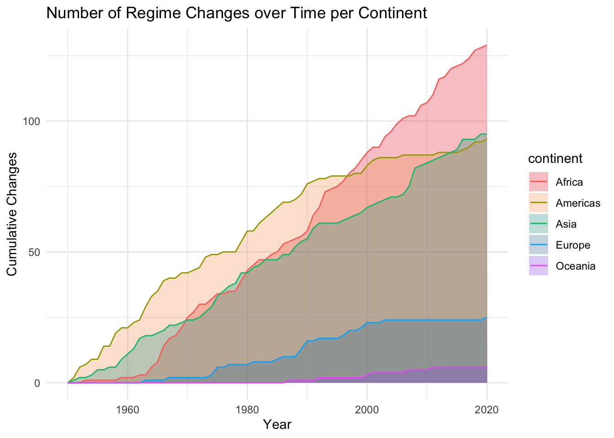
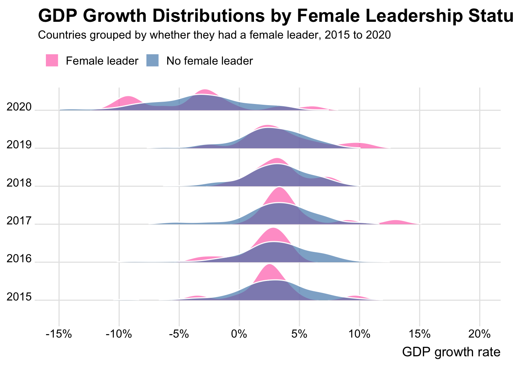
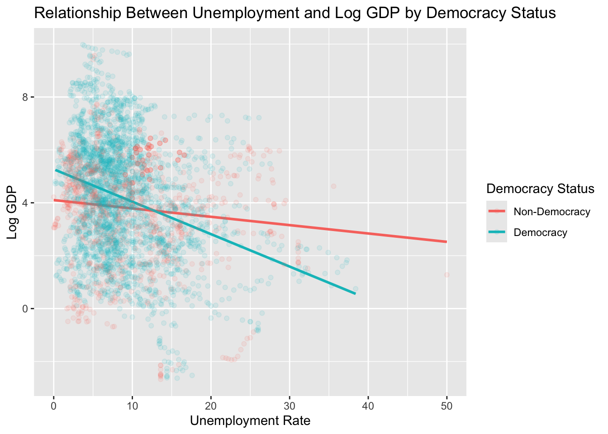
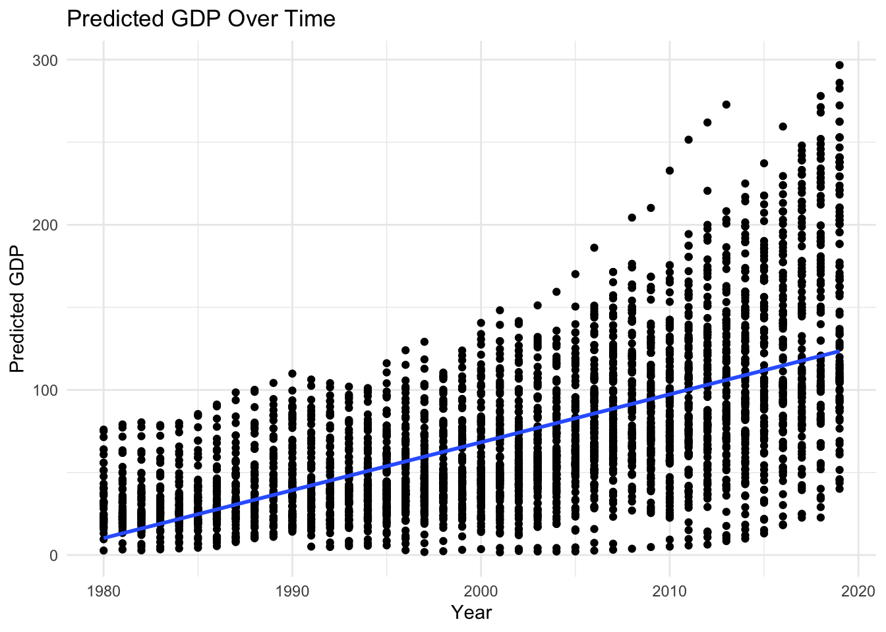

library(countrycode)
library(tidyverse)
library(ggridges)
library(scales)Project1 Check 4 Final
democracy_data <- readr::read_csv('https://raw.githubusercontent.com/rfordatascience/tidytuesday/main/data/2024/2024-11-05/democracy_data.csv')count_regime_changes_per_year <- function(yr) {
democracy_data |>
arrange(country_name, year) |>
group_by(country_name) |>
mutate(regime_changed = regime_category_index != lag(regime_category_index)) |>
ungroup() |>
filter(year == yr) |>
summarise(regime_changes = sum(regime_changed, na.rm = TRUE)) |>
pull(regime_changes)
}
regime_change_counts <- democracy_data |>
arrange(country_name, year) |>
group_by(country_name) |>
mutate(regime_changed = regime_category_index != lag(regime_category_index)) |>
ungroup() |>
mutate(continent = countrycode::countrycode(country_name,
origin = "country.name",
destination = "continent")) |>
group_by(continent, year) |>
summarise(n_changes = sum(regime_changed, na.rm = TRUE), .groups = "drop") |>
group_by(continent) |>
mutate(cumulative_changes = cumsum(n_changes)) |>
ungroup()Visualizing regime changes per continent over time
ggplot(regime_change_counts, mapping = aes(x=year,y = cumulative_changes,
fill = continent))+
geom_area(alpha = 0.3, position = "identity") +
geom_line(aes(color = continent))+
labs(x = "Year", y= "Cumulative Changes",
title = "Number of Regime Changes over Time per Continent ")+
theme_minimal()+
scale_fill_manual(values = c(
"Africa" = "#E63946",
"Americas" = "#F4A261",
"Asia" = "#2A9D8F",
"Europe" = "#457B9D",
"Oceania" = "#9B5DE5"
))
masterSet<-read.csv("masterSet.csv")
sum_female_leader <- function(democ_data, columns, group){
female_leader_any <- democ_data |>
rowwise() |> # Selects the rows as groups to check over each year
mutate(female_leader = any(c_across(all_of(columns)), na.rm = TRUE)
) |>
# Checks across defined columns for a female leader
ungroup() # Undoes rowwise() grouping
prop_female <- female_leader_any |>
group_by(across(all_of(group))) |> # Grouped by group = argument
summarise(prop_female_leader = mean(female_leader, na.rm = TRUE))
# mean of TRUE/FALSE for the proportion
return(prop_female) # returns the group argument and the proportion
}
female_lead <- sum_female_leader(masterSet,
columns = c("is_female_monarch", "is_female_president"),
group = "country_name") |>
arrange(-prop_female_leader)
female_leader_any <- masterSet |>
rowwise() |>
mutate(
female_leader = any(c_across(c(is_female_monarch, is_female_president)) == 1, na.rm = TRUE)
) |>
ungroup()
female_leader_any <- female_leader_any |> filter(!is.na(gdp_growth))
female_leader_any |>
count(female_leader, year) |>
filter(female_leader == TRUE) |>
arrange(-n)# A tibble: 41 × 3
female_leader year n
<lgl> <int> <int>
1 TRUE 2019 15
2 TRUE 2011 14
3 TRUE 2020 14
4 TRUE 2010 13
5 TRUE 2016 13
6 TRUE 2017 13
7 TRUE 2018 13
8 TRUE 2012 12
9 TRUE 2015 12
10 TRUE 2002 11
# ℹ 31 more rowsfemale_leader_any |>
filter(year > 2014) |>
mutate(
female_leader = if_else(female_leader, "Female leader", "No female leader"),
year = factor(year)
) |>
ggplot(mapping = aes(x = gdp_growth, y = as.factor(year), fill = female_leader)) +
geom_density_ridges(alpha = 0.65,
color = "white",
scale = 0.99,
rel_min_height = 0.01) +
scale_x_continuous(limits = c(-15,20),
breaks = seq(-15,20,5),
labels = label_number(suffix = "%")) +
scale_fill_manual(
values = c(
"No female leader" = "steelblue",
"Female leader" = "hotpink"
)) +
labs(title = "GDP Growth Distributions by Female Leadership Status",
subtitle = "Countries grouped by whether they had a female leader, 2015 to 2020",
x = "GDP growth rate",
y = NULL,
fill = NULL) +
theme_ridges(font_size = 13,
grid = TRUE) +
theme(
legend.position = "top",
legend.justification = "left",
plot.title = element_text(face = "bold", size = 18),
plot.caption = element_text(size = 10, color = "gray40")
)Picking joint bandwidth of 0.949Warning: Removed 26 rows containing non-finite outside the scale range
(`stat_density_ridges()`).
What are some key factors that are associated with countries’ GDPs?
We filtered our data-set to where it has no missing values for gdp, unemployment,whether they are a democracy or not and year. We omiited the year 2020 to the dataset because this year skewed the data due to the pandemic.
masterSet<-read.csv("masterSet.csv")
mastfilt <- masterSet |>
dplyr::filter(!is.na(gdp_nominal),
!is.na(unemployment_rate),
!is.na(year),
!is.na(is_democracy),
year != 2020)We created a model to predict a function of GDP (log(GDP)) from the year as well as the interaction of unemployment rate and whether that country was a democracy or not. We had to use a function of GDP because there was abnormalities in the GDP that complicate the model.
[ (_i) = _0 + _1 ,_i + _2 ,_i + _3 ,(_i _i) + _4 ,_i + _i ]
lmGDP = lm(log(gdp_nominal) ~ unemployment_rate*is_democracy + year, data = mastfilt)
summary(lmGDP)
Call:
lm(formula = log(gdp_nominal) ~ unemployment_rate * is_democracy +
year, data = mastfilt)
Residuals:
Min 1Q Median 3Q Max
-5.9633 -1.3870 0.2784 1.3136 5.2245
Coefficients:
Estimate Std. Error t value Pr(>|t|)
(Intercept) -77.160813 6.245712 -12.354 < 2e-16 ***
unemployment_rate -0.030466 0.009441 -3.227 0.00126 **
is_democracyTRUE 1.121290 0.134868 8.314 < 2e-16 ***
year 0.040603 0.003120 13.013 < 2e-16 ***
unemployment_rate:is_democracyTRUE -0.092281 0.011994 -7.694 1.83e-14 ***
---
Signif. codes: 0 '***' 0.001 '**' 0.01 '*' 0.05 '.' 0.1 ' ' 1
Residual standard error: 2.016 on 3625 degrees of freedom
Multiple R-squared: 0.1173, Adjusted R-squared: 0.1163
F-statistic: 120.4 on 4 and 3625 DF, p-value: < 2.2e-16mastfilt <- mastfilt |>
mutate(
preds = exp(predict(lmGDP)))Here we are adding the predicted GDP values to the original dataset.
ggplot(aes(y =log(gdp_nominal), x = unemployment_rate, color = factor(is_democracy)), data = mastfilt) +
geom_smooth(method = 'lm', se = F) +
geom_point(alpha = 0.1) +
labs(
x = "Unemployment Rate",
y = "Log GDP",
color = "Democracy Status",
title = "Relationship Between Unemployment and Log GDP by Democracy Status") +
scale_color_discrete(
labels = c("Non-Democracy", "Democracy"))`geom_smooth()` using formula = 'y ~ x'
This plot shows the relationship between the interaction of whether a country is democratic or not and the unemployment rate on our function of GDP. We notice a faster drop in our function GDP when a country is democratic and the unemployment rate increases compared to when it is not democratic.
ggplot(data = mastfilt, aes(x = year, y = preds)) +
geom_point() +
geom_smooth(method = "lm", se = FALSE) +
labs(
x = "Year",
y = "Predicted GDP",
title = "Predicted GDP Over Time") +
theme_minimal()`geom_smooth()` using formula = 'y ~ x'
This plot demonstrates the relationship between the year and GDP. As the plot demonstrates for every year we notice as increase in GDP which is what we would expect.